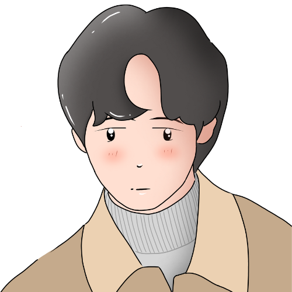
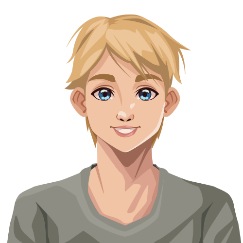
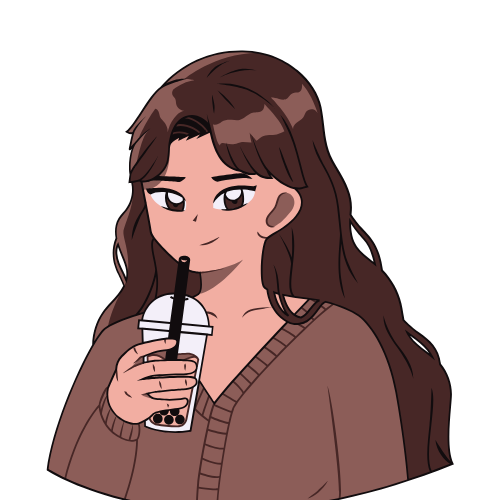
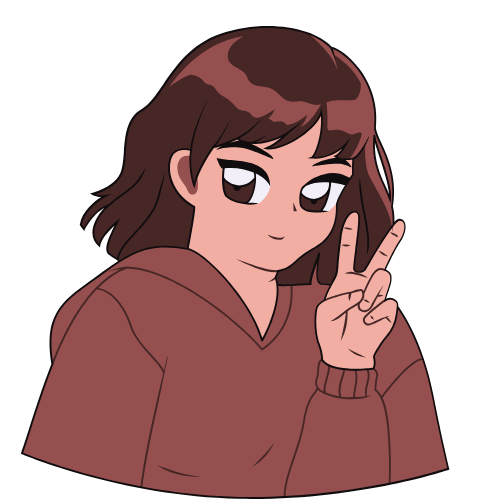

Local Makers
Connect with skilled local makers who offer tutorials and guidance on turning waste into valuable items.

Sung Woo
Expert in woodworking and furniture upcycling.
Jane Smith
Specialist in textile crafts and fabric reuse.

Alex Lee
Focuses on metal crafting and repurposing scrap metals.

Sarah Wong
Expert in ceramic crafts and pottery upcycling.
Michael Zhou
Skilled in glass repurposing and creating sustainable decor.

Olivia Tan
Master of eco-friendly gardening and upcycled planters.